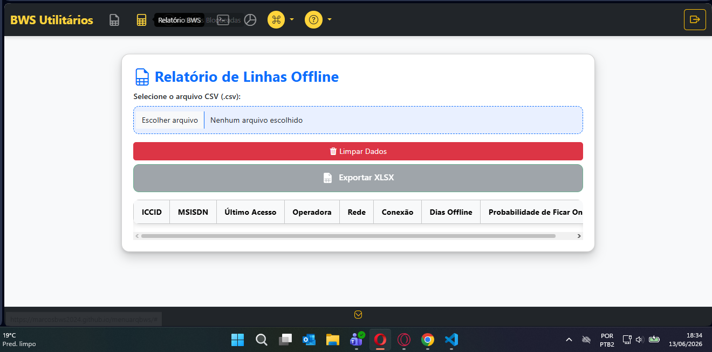
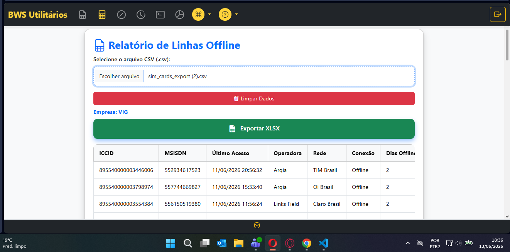
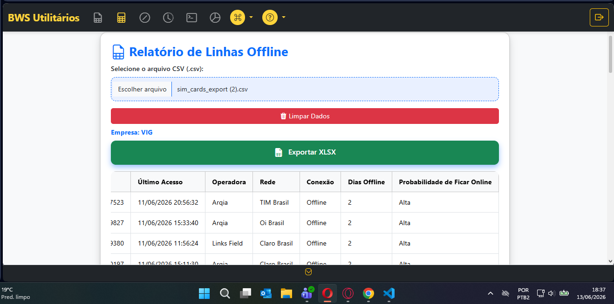
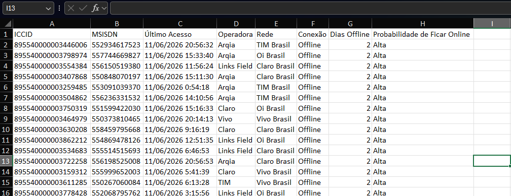

Relatório de Linhas Offline
Analise o tempo de inatividade das linhas, calcule dias offline e identifique a probabilidade de recuperação da conexão.
Mesmo formato do CSV de Reset
O relatório utiliza o mesmo arquivo CSV do processo de carga de reset — primeira coluna: ICCID | segunda coluna: MSISDN | segunda linha/primeira coluna: Nome da empresa
Carregar o arquivo CSV

📁 imagens/linhasOffline/TelaLinhasOff1.png
Na tela principal do relatório, faça o upload do arquivo CSV contendo as linhas que deseja analisar. O sistema processará automaticamente os dados e identificará cada linha.
Visualizar dias offline

📁 imagens/linhasOffline/TelaLinhasOff2.png
Após o upload, o sistema calcula automaticamente há quantos dias cada linha está offline. Os resultados são exibidos em uma tabela organizada, permitindo fácil análise dos dados.
Probabilidade de Ficar Online

📁 imagens/linhasOffline/TelaLinhasOff3.png
O relatório classifica automaticamente cada linha com base nos dias offline, dividindo em três níveis de probabilidade de recuperação:
Alta
≤ 10 dias offline
Probabilidade alta de retorno à operação normal.
Média
11 a 15 dias offline
Probabilidade moderada — requer atenção.
Baixa
> 15 dias offline
Probabilidade muito baixa de recuperação automática.
Importante: Quando a probabilidade é classificada como BAIXA, é altamente recomendável que o cliente realize uma verificação física do equipamento, pois a chance de retorno automático da conectividade é mínima.
Nomenclatura do Arquivo

📁 imagens/linhasOffline/TelaLinhasOff4.png
Seguindo o mesmo esquema utilizado na ferramenta de carga, o nome do arquivo gerado é composto por:
- Nome da empresa — capturado da segunda linha, primeira coluna do CSV
- Data de geração — no formato YYYYMMDD
- Hora de geração — no formato HHMMSS
EMPRESA_20241215_143022.csv
Exemplo: NomeDaEmpresa_AnoMêsDia_HoraMinutoSegundo.csv
Resumo do Fluxo
1. Upload
CSV das linhas
2. Cálculo
Dias offline
3. Classificação
Alta | Média | Baixa
4. Exportar
Enviar ao cliente
Relatório de Linhas Offline · Saitro